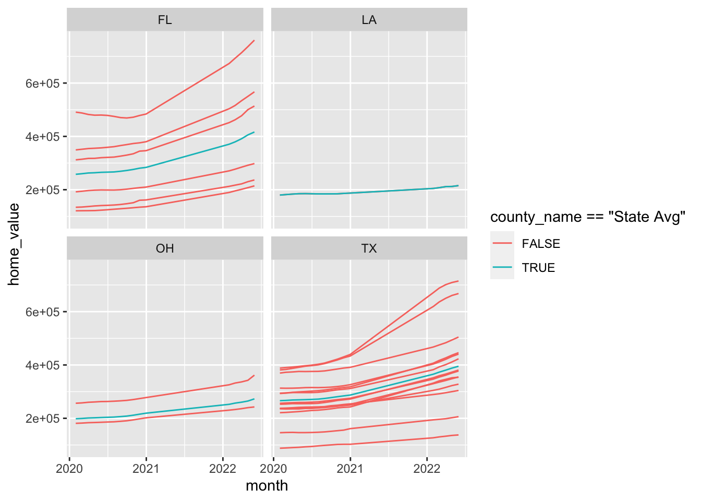

9 Tips and Tricks
This section of the R&A Manual is for sharing various tricks that are will make you life easier. Rules of thumb, explanations of how things work, and useful design patterns are all fair game.
9.1 Data processing
9.1.1 De-duplicating rows in a table.
There are two general purpose design patterns for de-duplicating rows in a table in either R or SQL.
In R use the
dplyr::distinct()function and in SQL use a DISTINCT clause. This is pretty simple and robust, with the typical use case of wanting to reduce many identical rows to a single row.-
If you are trying to de-duplicate where you may have non-identical rows (e.g., a student has taken the same assessment multiple times in a testing window and you’d like to get the latest date) then you can use a
group_by-arrange-row_number-filterpattern:- Group you data by the columns that uniquely identify your object of inquiry (e.g., student number)
- Arrange or sort the data by a column that puts an ordering you care about within the grouped data (e.g., assessment date)
- Create a new column that contains the row number within the group (e.g, a student with 5 assessments in a window would have
row_number = 1for the first date androw_number = 5for the last date). - Filter for the maximum row number(with
dplyr::filter()in R or aWHEREclause in SQL) - (optional) Ungroup your data.
9.1.2 Hierarchical aggregation, or the list-group_by trick
Schools data, especially student-level data, is embedded in hierarchical groupings.
Let’s look at the Zillow Home Value Index for all homes (i.e, single family homes, condos, and coops), which is smoothed, seasonally adjusted measure of the typical home value and market changes across a given region It reflects the typical value for homes in the 35th to 65th percentile range at the neighborhood level. These home values are available for every month from January 2000 to May 2022.
It’s a very large dataset so we’ll use the apache Arrow Project’s feather file to read the data into R and subset the housing costs to IDEA metro areas
library(arrow)
#>
#> Attaching package: 'arrow'
#> The following object is masked from 'package:utils':
#>
#> timestamp
zillow <- read_feather("./zillow.feather")
idea_metros <- tibble(Metro = c("Austin-Round Rock",
"Dallas-Fort Worth-Arlington",
"San Antonio-New Braunfels",
"Brownsville-Harlingen",
"El Paso",
"Houston-The Woodlands-Sugar Land",
"Baton Rouge",
"Tampa-St. Petersburg-Clearwater",
"Jacksonville",
"Cincinnati"
)
)
zillow_idea <- zillow %>%
inner_join(idea_metros, by = "Metro") %>%
select(RegionID:CountyName, matches("202*-")) %>%
janitor::clean_names()
#zillow_ideaThese data are nested: we have 22 years of home prices within neighborhoods, cities, counties, metro areas, and states. Often we’d like to do aggregations by over these various level. That is, we’d like to know the mean home price for each neighborhood, city and county. A typical work flow to achieve this is to write a dplyr pipeline for one group_by combination and then copy-and-paste that pipeline and change the columns in the group_by call. While this works in a pinch, its repetitive (violating the DRY doctrine), prone to copying errors and leaves with a bunch of dataframe that are have increasingly awkward names.
A more elegant solution is to leverage purrr’s map_df function and to pass it a listy of already grouped data frames. Here’s a simple example:
library(purrr)
zillow_idea_county_state <- zillow_idea %>%
# create a list of grouped data.frames
{list(
group_by(., county_name, state), # the . is a placeholder for the data.frame being piped in
group_by(., state)
)} %>%
map_df(., ~{
.x %>% # .x is a placeholder for each element of list above passed to map_df
# across allows us to apply a function to every column satisfying a condition
summarize(across(starts_with("x20"), ~mean(.x, na.rm = TRUE)))
})
#> `summarise()` has grouped output by 'county_name'. You can
#> override using the `.groups` argument.
#head(zillow_idea_county_state)We now have a data frame with county-level and state-level means in one data frame. Notice however that the county_name field is NA for state level data:
zillow_idea_county_state %>%
filter(is.na(county_name))
#> # A tibble: 4 × 19
#> # Groups: county_name [1]
#> county_name state x2020_01_31 x2020_02_29 x2020_03_31
#> <chr> <chr> <dbl> <dbl> <dbl>
#> 1 <NA> FL 257794. 259999. 262739.
#> 2 <NA> LA 179935. 181797. 183616.
#> 3 <NA> OH 198424. 199450. 201128.
#> 4 <NA> TX 266042. 267043. 268646.
#> # … with 14 more variables: x2020_04_30 <dbl>,
#> # x2020_05_31 <dbl>, x2020_06_30 <dbl>,
#> # x2020_07_31 <dbl>, x2020_08_31 <dbl>,
#> # x2020_09_30 <dbl>, x2020_10_31 <dbl>,
#> # x2020_11_30 <dbl>, x2020_12_31 <dbl>,
#> # x2022_01_31 <dbl>, x2022_02_28 <dbl>,
#> # x2022_03_31 <dbl>, x2022_04_30 <dbl>, …This makes sense, since map_df uses bind_rows to concatonate the aggregated tables together and will fill columns that are missing in data frame with NA values. With simple example like this we could add an extra step at the end of our pipline to provide more information:
zillow_idea_county_state <- zillow_idea %>%
# create a list of grouped data.frames
{list(
group_by(., county_name, state), # the . is a placeholder for the data.frame being piped in
group_by(., state)
)} %>%
map_df(., ~{
.x %>% # .x is a placeholder for each element of list above passed to map_df
# across allows us to apply a function to every column satisfying a condition
summarize(across(starts_with("x20"), ~mean(.x, na.rm = TRUE)))
}) %>%
replace_na(list(county_name = "State Avg"))
#> `summarise()` has grouped output by 'county_name'. You can
#> override using the `.groups` argument.
zillow_idea_county_state %>%
filter(is.na(county_name))
#> # A tibble: 0 × 19
#> # Groups: county_name [0]
#> # … with 19 variables: county_name <chr>, state <chr>,
#> # x2020_01_31 <dbl>, x2020_02_29 <dbl>,
#> # x2020_03_31 <dbl>, x2020_04_30 <dbl>,
#> # x2020_05_31 <dbl>, x2020_06_30 <dbl>,
#> # x2020_07_31 <dbl>, x2020_08_31 <dbl>,
#> # x2020_09_30 <dbl>, x2020_10_31 <dbl>,
#> # x2020_11_30 <dbl>, x2020_12_31 <dbl>, …
zillow_idea_county_state %>%
filter(county_name == "State Avg")
#> # A tibble: 4 × 19
#> # Groups: county_name [1]
#> county_name state x2020_01_31 x2020_02_29 x2020_03_31
#> <chr> <chr> <dbl> <dbl> <dbl>
#> 1 State Avg FL 257794. 259999. 262739.
#> 2 State Avg LA 179935. 181797. 183616.
#> 3 State Avg OH 198424. 199450. 201128.
#> 4 State Avg TX 266042. 267043. 268646.
#> # … with 14 more variables: x2020_04_30 <dbl>,
#> # x2020_05_31 <dbl>, x2020_06_30 <dbl>,
#> # x2020_07_31 <dbl>, x2020_08_31 <dbl>,
#> # x2020_09_30 <dbl>, x2020_10_31 <dbl>,
#> # x2020_11_30 <dbl>, x2020_12_31 <dbl>,
#> # x2022_01_31 <dbl>, x2022_02_28 <dbl>,
#> # x2022_03_31 <dbl>, x2022_04_30 <dbl>, …Why have all of this one data frame? Because it can now be easily graphed:
zillow_idea_county_state %>%
# pivot to a long table by year
pivot_longer(cols = starts_with("x"), names_to = "month", values_to = "home_value") %>%
# let's clean up the month column by removing the leading x and casting to a date
mutate(month = str_remove(month, "x"),
month = lubridate::ymd(month)) %>%
ggplot(aes(x = month, home_value)) +
geom_line(aes(color = county_name == "State Avg", group=county_name)) +
facet_wrap(~state)
9.2 Statistical pitfalls
9.2.1 Simpson’s Paradox
When identifying trends in a distribution, be careful of interpreting those trends, particularly when there is hierarchy involved in the population. The ranking, magnitude, and direction of the trends can reverse when conditioning on a certain level of a hierarchy. For example, STAAR achievement levels as a function of minutes on an individual learning program like Dreambox may not be significant at the district level, but could be significant when at the school or classroom level.